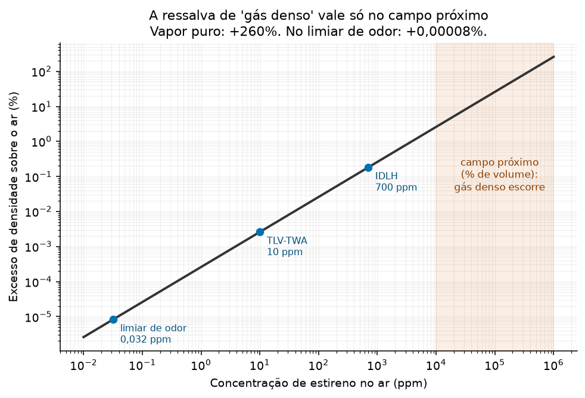
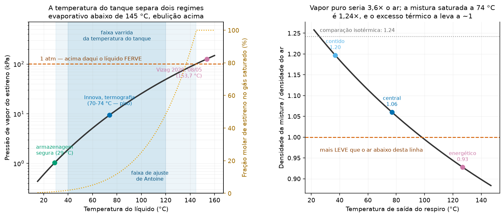
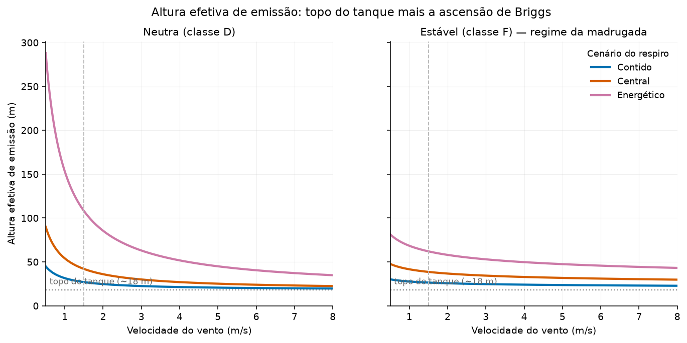
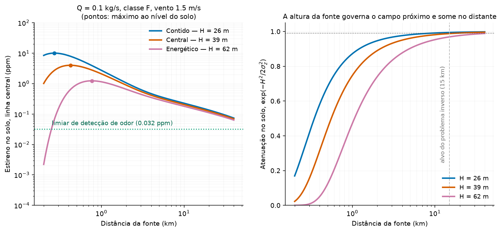
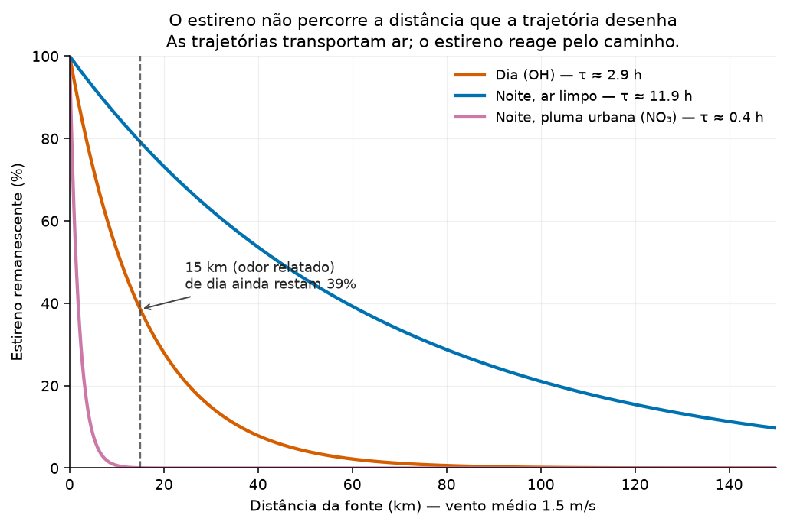

O destino do estireno: densidade e química
O modelo de pluma indica para onde o vento leva o material, e as trajetórias indicam até onde a massa de ar viaja. Nenhum dos dois responde a duas perguntas que mudam a leitura do conjunto:
- O estireno é 3,6 vezes mais denso que o ar — isso vale na fonte e ao longo do percurso?
- As trajetórias desenham centenas de quilômetros — o estireno chega lá?
As duas respostas são negativas, e cada uma tem uma consequência prática.
1. Excesso de densidade e campo próximo
O valor 3,6 é a densidade do vapor puro. O que escoa na atmosfera é a mistura, e o excesso de densidade cai proporcionalmente à fração molar :
| Concentração | Excesso de densidade |
|---|---|
| Vapor puro (10⁶ ppm) | +260% |
| 1000 ppm | +0,26% |
| 700 ppm (IDLH) | +0,18% |
| 10 ppm (TLV-TWA) | +0,0026% |
| 0,032 ppm (piso do limiar de detecção de odor) | +0,0000083% |

O comportamento de gás denso — a nuvem escorrendo rente ao solo, descendo por depressões, empoçando — é real, mas confinado ao campo próximo: a poça, o entorno imediato do tanque, as primeiras dezenas a centenas de metros. Na escala do bairro a nuvem é, para todos os efeitos mecânicos, ar.
Neste evento, porém, nem o campo próximo se comportou assim, e a razão é termodinâmica. A concentração na fonte não é livre: ela está limitada pela pressão de vapor do estireno na temperatura do líquido, e essa temperatura foi medida — com uma ressalva de porte, tratada em dados e métodos: a leitura é de superfície, sob resfriamento externo, e de um instante em que não há jato visível sobre o tanque, de modo que ela é um piso. A termografia por drone registrou 70 a 74 °C no costado, faixa em que a pressão de vapor vale 8,0 a 9,4 kPa contra os 101,3 kPa da atmosfera. O gás que deixou o respiro continha, portanto, no máximo 9,3% de estireno em mols — tudo o mais era ar.

O efeito sobre o argumento de densidade é decisivo:
| Situação | Razão de densidade sobre o ar |
|---|---|
| Vapor puro | 3,60 |
| Mistura saturada a 74 °C, comparação isotérmica | 1,24 |
| Mesma mistura no cenário central de saída (350 K) | 1,06 |
| Mesma mistura no cenário energético (400 K) | 0,93 |
O excesso térmico da liberação — cerca de 44 K acima do ambiente — consome quase todo o excesso de massa molar, e no cenário mais energético a mistura fica mais leve que o ar. Não há abatimento gravitacional a discutir: a pluma sobe, e é isso que a seção seguinte mostra a partir das imagens.
Uma linha foi retirada desta tabela e convém dizer por quê. A mistura saturada a 74 °C avaliada a 310 K estaria seis vezes supersaturada — a saturação a 310 K é de 1,6 mol%, não 9,3 —, isto é, descreve um estado que não existe sem condensação. O gás que esfria ao sair condensa parte do estireno, e é essa condensação, somada ao vapor d’água, que produz o branco do penacho registrado nos vídeos. A leitura correta do cenário de respiro contido não é uma mistura mais densa: é uma mistura mais diluída, com o excedente em fase líquida.
A triagem formal pelos critérios de dispersão densa, com as ressalvas do que ela não resolve sozinha, está em dados e métodos. A mesma curva de pressão de vapor separa este episódio do acidente de Visakhapatnam, onde a taxa medida de perda de inventário é incompatível com liberação em fase vapor e exige arraste de líquido: um aerossol de gotículas escoa rente ao solo qualquer que seja a temperatura, e foi isso que as câmeras registraram lá.
2. Geometria da liberação: elevada e sob pressão
Se a densidade não retém o produto junto ao chão, o que define a altura da emissão é o modo como ele saiu. Os registros em vídeo feitos por moradores durante o evento (divulgados pela CNN Brasil, cedidos pela página Radar Amazônico) mostram jatos verticais colimados saindo do topo dos tanques, e não uma nuvem escorrendo pelo pátio.
Cinco observações independentes são visíveis nas imagens:
- Jatos estreitos e coerentes, que se mantêm organizados por muitas vezes a altura do tanque. Evaporação de poça não produz essa geometria; escoamento sob pressão produz.
- Verticalidade mantida contra o vento lateral — o penacho só se inclina depois de uma subida longa, o que indica excesso de quantidade de movimento vencendo o vento.
- Múltiplas saídas pontuais no teto (chegam a se contar quatro), assinatura de válvulas de alívio e respiros, e não de vazamento difuso.
- Achatamento num nível definido: o penacho sobe e espalha-se em lençol horizontal, o que corresponde à pluma encontrando uma camada estável e sendo aprisionada em altura.
- Cor branca. O estireno é incolor, de modo que o branco é condensação, indicando vapor mais quente que o ambiente ao entranhar o ar úmido amazônico.
Correspondência com a nota da empresa
A nota da Videolar-Innova descreve o mesmo mecanismo: o líquido “sofreu elevação anormal de temperatura, liberando vapores de forma controlada pelos próprios dispositivos de segurança do equipamento”. Os dispositivos de segurança de um tanque pressurizado são as válvulas de alívio, que é a assinatura registrada nas imagens e o mecanismo descrito na cronologia — polimerização exotérmica descontrolada elevando temperatura e pressão até o alívio abrir.
A mesma nota afirma que “não houve incêndio, vazamento do produto líquido ou de efluentes para fora dos diques de contenção”. A afirmação exclui migração de líquido para fora dos diques, e não a existência de líquido derramado dentro deles — um dique retém poça, e poça contida evapora. A fiscalização municipal, aliás, identificou dez fissuras no dique de contenção e mediu 39,09 mg/L de estireno no líquido que escapava por uma delas, 558 vezes o limite de lançamento de efluentes: registro direto de liberação também em fase líquida (ver Resposta e regulação).
A liberação teve, portanto, duas vias documentadas. A dominante, registrada em vídeo e modelada aqui, é o vapor pressurizado pelo topo. A segunda, rasteira e dentro da contenção, não é modelada nem quantificada: faltam área molhada e temperatura de poça para estimá-la, e é justamente no campo próximo — onde uma fonte de área ao nível do solo poderia sustentar regime denso — que ela agiria. O sinal do seu efeito é desconhecido, e fica declarado como lacuna.
O aspecto visual da emissão, porém, não é medida de massa. Em 17/07 o Corpo de Bombeiros informou que cerca de 80% do material ainda expelido pelo tanque era composto de partículas de água, com a concentração do produto químico “bem menor do que no dia do vazamento”; a isso somam-se os quatro canhões de água usados no resfriamento externo. O branco do penacho é, portanto, condensação, coerente com o produto ser incolor.
Nota metodológica. Como o tamanho do penacho é dominado por vapor de água, ele não mede a massa de estireno emitida. A taxa de emissão deste estudo é estimada pelo problema inverso, a partir do alcance do odor, e não pelo aspecto visual da emissão.
Ascensão de pluma e altura efetiva da fonte
Uma liberação com essa geometria sobe por quantidade de movimento (o jato) e por empuxo (o vapor quente). A altura efetiva de emissão é

Os parâmetros do respiro — diâmetro , velocidade de saída e temperatura de saída — não foram divulgados e são inferidos das imagens. O resultado é, por isso, uma faixa e não um número (classe F, vento de 1,5 m/s):
| Cenário do respiro | do máximo no solo | |||||
|---|---|---|---|---|---|---|
| Contido (respiro pequeno, saída morna) | 0,15 m | 30 m/s | 310 K | 8,5 m | 26,5 m | 269 m |
| Central (alívio franco, vapor aquecido) | 0,20 m | 60 m/s | 350 K | 20,6 m | 38,6 m | 419 m |
| Energético (quase sônico, vapor quente) | 0,30 m | 150 m/s | 400 K | 44,0 m | 62,0 m | 763 m |
O teto sônico depende da composição do que escoa, e o que escoa é quase todo ar: a vazão de cada cenário, combinada com a emissão inferida, implica de 0,2 a 3,3 mol% de estireno (dados e métodos). Na mistura do cenário energético a velocidade do som a 400 K é de 393 m/s, e os 150 m/s adotados correspondem a 38% dela. Os 185 m/s do estireno puro são o menor valor possível para qualquer composição, e servem apenas para afirmar que a saída é subsônica com folga sob qualquer hipótese — não para fixar o limite superior da faixa, que vem do julgamento sobre as imagens.
A ascensão final se completa a m da fonte com vento de 1,5 m/s (147 m com 2,4 m/s). Como essa distância cabe dentro da primeira célula da grade de 100 m, o modelo trata como já concluída na própria fonte, sem erro resolúvel pela grade.
Efeito da altura efetiva sobre a concentração no solo

A razão entre a concentração no solo de uma fonte situada à altura e a de uma fonte rasteira é um fator puramente geométrico,
que, para m, vale 0,75 a 1 km e 0,99 a 15 km. A atenuação existe apenas enquanto é comparável à altura da fonte, ou seja, no campo próximo. Sob a tampa de camada de mistura o efeito desaparece por completo: onde já excede — o que a 15 km ocorre, com m contra m para m —, o termo vertical satura, o campo no solo passa a valer e deixa de depender de .
O deslocamento do máximo ao nível do solo acompanha a altura da fonte: 269 m para m, 419 m para m e 763 m para m. Junto ao muro da planta, portanto, a concentração ao nível do solo é menor que a do pico, que ocorre algumas centenas de metros a jusante.
Ao longo de toda a faixa de 26 a 62 m, a taxa de emissão estimada pelo problema inverso varia de 0,060 a 0,075 kg/s, isto é, 24%. Essa variação não é de origem geométrica: com o vento mantido fixo, a variação é nula, porque sob mistura uniforme a concentração no solo a 15 km independe de . Os 24% vêm inteiramente do perfil vertical de vento — uma fonte mais alta encontra vento mais forte e dilui mais, exigindo emissão maior para produzir o mesmo sinal a 15 km.
A redução da concentração ao nível do solo no campo próximo não conflita com a predominância de casos ocupacionais (67% dos registros): a exposição dentro da planta se deu junto ao líquido e ao entorno imediato dos equipamentos, e não à pluma já elevada.
Limitação. O modelo não representa o downwash aerodinâmico do próprio tanque e dos prédios do polo, que age no sentido oposto ao da elevação da fonte, trazendo material ao solo mais perto da emissão. No campo próximo, portanto, a altura efetiva não é a palavra final.
3. Reatividade troposférica do estireno
O estireno tem um grupo vinila (a dupla ligação C=C ligada ao anel aromático) e reage como um alceno, muito mais rápido que o benzeno ou o tolueno. As três vias de perda na troposfera, com as constantes a 298 K de Atkinson & Arey (2003):
| Oxidante | (cm³ molécula⁻¹ s⁻¹) | Quando atua |
|---|---|---|
| OH (hidroxila) | De dia, por ser fotoquímico | |
| NO₃ (nitrato) | Só à noite, pois fotolisa de dia | |
| O₃ (ozônio) | O tempo todo, mas lentamente |
O tempo de vida resulta da soma das três vias:
Com o OH tropical diurno ( moléculas/cm³) e ozônio de fundo da ordem de algumas dezenas de ppb, o regime diurno tem tempo de vida h.
Tempo de vida e meia-vida são grandezas distintas e não devem ser confundidas: a meia-vida vale , de modo que aos 2,91 h de tempo de vida diurno correspondem 2,0 h de meia-vida, e aos 11,9 h da noite de ar limpo (seção 5) correspondem 8,2 h. Em qualquer dos regimes a escala é de horas, não de dias, e é ela que limita o alcance real da pluma.
4. Alcance químico frente ao alcance das trajetórias
O HYSPLIT integra o vento, sem química e sem diluição: mostra para onde a parcela de ar foi, não para onde o estireno foi. O produto some pelo caminho, e essa distinção é o principal risco de má leitura do mapa de trajetórias.
Combinando o transporte no regime do episódio — madrugada, vento de 1,5 m/s — com os três regimes químicos:
| Distância | Tempo de transporte | Noite de ar limpo ( h) | Dia ( h) | Noite sob NOx industrial ( h) |
|---|---|---|---|---|
| 5 km | 0,9 h | 92,5% | 72,8% | 8,0% |
| 15 km (odor relatado) | 2,8 h | 79,2% | 38,5% | 0,05% |
| 30 km | 5,6 h | 62,7% | 14,8% | 2,6×10⁻⁵ % |
| 50 km | 9,3 h | 45,9% | 4,2% | ≈ 0 |
| 80 km | 14,8 h | 28,8% | 0,6% | ≈ 0 |
A última coluna é reproduzida por completude e não descreve um regime possível: a seção 5 mostra que destruir 99,95% do material a 15 km exigiria duas mil vezes mais oxidante do que a massa de ar contém. As duas primeiras colunas são regimes puros e funcionam como limites — uma parcela que permaneça mais de dez horas na atmosfera atravessa o nascer do sol e muda de regime, razão pela qual a pegada química das trajetórias é integrada ponto a ponto entre dia e noite. A coluna diurna é limite inferior de sobrevivência, porque a própria pluma suprime o OH que a destrói. Com o vento avaliado na altura da fonte, e não a 10 m, o fator de decaimento aplicado no modelo a 15 km na noite de ar limpo é 0,86.

A química reforça a afirmação central em vez de enfraquecê-la. Odor perceptível a 15 km exige 2,8 h de transporte, o que corresponde a 0,24 tempo de vida no regime noturno de ar limpo e deixa 79,2% do material presente — folgadamente dentro do quimicamente possível. O que não se sustenta é ler o traçado de 24 h como alcance do produto: as trajetórias alcançam mediana de 314 km de deslocamento líquido, enquanto a pegada química é de dezenas de quilômetros. O que os sensores orbitais registram e o traçado completo das trajetórias são tratados na seção sobre satélites e trajetórias.
5. Regime noturno e o teto imposto pelo oxidante
Dos três mecanismos que a madrugada aciona, os três sustentam o adensamento das queixas de odor — e o terceiro, que este trabalho tratava como indeterminado, é o que a conservação de massa resolve.
| Mecanismo | Comportamento na madrugada | Base |
|---|---|---|
| Diluição vertical | camada estável, que não dilui | METAR: cerca de metade das horas em classe E/F |
| Escoamento | canalizado pelo vale, portanto concentrado | WRF de 1 km |
| Química | lenta, e não pode ser rápida | balanço de oxidante, abaixo |
À noite o OH desaparece, por ser produzido pela luz, o que sugere maior sobrevivência do estireno. Quem assume à noite é o radical NO₃, formado a partir de NOx — exatamente o que um distrito industrial emite. A cinética de fundo sugere, então, duas possibilidades muito distantes:
| Cenário noturno | [NO₃] (moléculas/cm³) | Tempo de vida | Meia-vida |
|---|---|---|---|
| Ar limpo | 11,9 h | 8,2 h | |
| Sob pluma urbana ou industrial | 0,37 h (22 min) | 15 min |
Só que a segunda linha não descreve nada que possa ter acontecido.
O oxidante é finito, e isso decide o regime noturno
O decaimento de primeira ordem, , supõe que a concentração de oxidante seja constante e externa à pluma. A hipótese vale para um traçador em diluição infinita e falha quando a pluma carrega mais estireno do que existe oxidante para consumi-lo — que é precisamente o caso aqui.
O reservatório correto é o oxigênio ímpar, e não o NO₃ instantâneo. O NO₃ se forma de NO₂ + O₃ e, ao adicionar-se à dupla ligação do estireno, não se regenera: cada molécula destruída por essa via custa um O₃, exatamente como a via direta do ozônio. À noite não há fotólise de NO₂ que recicle o reservatório, e o ar arrastado pela pluma traz o mesmo fundo que ela já tinha. Em razão de mistura, o balanço fica independente da diluição:
com a razão de mistura que a pluma teria no alvo sem química e a fração remanescente. Contra os 20 ppb de ozônio de superfície medidos na Amazônia central em estação seca:
| Regime noturno | Estireno destruído a 15 km | Razão sobre o disponível | Veredito |
|---|---|---|---|
| Ar limpo ( h) | 0,0042 ppm | 0,21 | admissível, folga de fator cinco |
| Sob NOx industrial ( min) | 4,0 ppm | 200 | impossível |
Varridos os 1458 membros de cada ramo no envelope, o de ar limpo passa em 1431 e o de NO₃ é reprovado em todos, por fatores de 3,8 a 4,1×10⁵. A conclusão é cinética e não estatística: o próprio estireno titularia o NO₃ muito abaixo dos moléculas/cm³ assumidos, de modo que sob NOx industrial o tempo de vida noturno seria maior que o de ar limpo, e não vinte vezes menor. O ramo se autodestrói — quanto mais emissão ele exige, mais o oxidante se esgota e mais longo fica o tempo de vida.
Há uma forma de enunciar o resultado que dispensa defender o valor adotado para o ozônio, e é a mais forte. Em vez de perguntar se cada membro passa sob 20 ppb, pergunta-se quanto ozônio ele exigiria: o membro central pede 4,2 ppb, e o ramo de NO₃ pediria 4.000 ppb — duzentas vezes o maior valor já registrado na Amazônia central, e quarenta vezes o pico de queimada. A varredura confirma que nada disso depende da escolha:
| O₃ de fundo | Ramo de ar limpo admissível | Ramo de NO₃ | Razão do membro central |
|---|---|---|---|
| 5 ppb | 600 de 1458 | 0 de 1458 | 0,85 |
| 10 ppb | 1188 de 1458 | 0 de 1458 | 0,42 |
| 15 ppb | 1371 de 1458 | 0 de 1458 | 0,28 |
| 20 ppb (medido, estação seca) | 1431 de 1458 | 0 de 1458 | 0,21 |
| 25 ppb | 1455 de 1458 | 0 de 1458 | 0,17 |
| 30 ppb | 1458 de 1458 | 0 de 1458 | 0,14 |
O que isso muda no trabalho é grande e é para melhor. A indeterminação de três ordens de grandeza em que atravessava todas as páginas desaparece: não havia duas hipóteses rivais, havia uma hipótese e um cenário impossível. E o resultado deixa de ser condicional — não é preciso supor que o NO₃ local foi baixo, porque a química rápida não era acessível qualquer que fosse o NOx do Distrito Industrial.
O regime diurno não é submetido a esse teste, e a razão é mecanicista. O OH é portador de cadeia: regenera-se pelo ciclo HO₂ + NO, de modo que não existe reservatório finito a titular. O que existe é supressão — a pluma acrescenta reatividade e derruba a concentração de equilíbrio. A 0,047 ppm o estireno contribui com 67 s⁻¹ à reatividade de OH, contra 10 a 62 s⁻¹ do ar de fundo amazônico medidos no mesmo sítio, o que baixa a concentração de OH dentro da pluma por um fator de 2 a 8. O efeito alonga o tempo de vida: os 2,91 h do regime diurno são limite inferior, e a emissão diurna inferida é limite superior.
Uma lacuna observacional permanece, agora mais barata de fechar e menos consequente: uma medida de ozônio noturno no Distrito Industrial fixaria o reservatório em vez de o herdar do sítio de fundo. Ela desloca a folga do fator cinco, não a existência dela. Continua valendo a lacuna documental — a capacidade dos tanques envolvidos limitaria por inventário a massa total emitida.